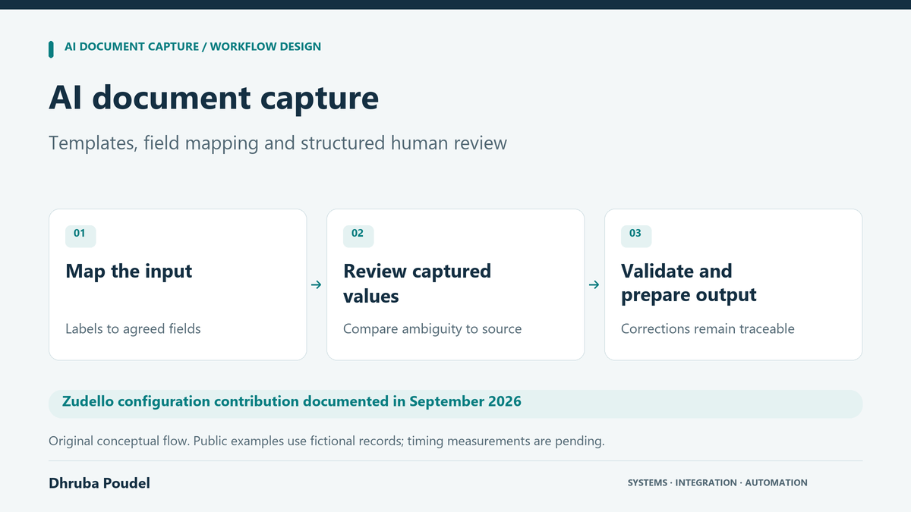

Source and illustrative capture
- Order reference
EXAMPLE-PO-001- Source unit price
- AUD 120.00
- Captured unit price
12O.OO- Capture issue
- Letter O appears where a numeric decimal is required.
- Review state
- Hold the field for source comparison.
Business systems · AI capture configuration
A practical template and field-mapping improvement, explained through a fictional purchase-order review.

In the documented purchase-order workflow, I adjusted the input template so the capture service could recognise the intended fields, mapped those fields for later processing and demonstrated the workflow to a user. This contribution combined configuration, data interpretation and practical user guidance.
The capture capability belongs to the vendor platform. My contribution is the input preparation, field mapping and workflow configuration around it, with a focus on replacing repeated line-by-line entry with structured review.
The configuration contribution is documented work from September 2026. The examples below are newly created fictional illustrations of mapping, validation and correction. They are not live Zudello extraction results or a published accuracy benchmark.
A readable label on a document needs an agreed target field, expected type and review rule. The illustrative mapping separates identifiers, descriptions, quantities and amounts so a reviewer can locate an inconsistency without losing the source context.
| Source label | Target field | Review rule |
|---|---|---|
| Order number | purchase_order_id | Required identifier; confirm within the controlled batch. |
| Supplier reference | supplier_reference | Match against the approved supplier reference. |
| Quantity | lines[].quantity | Parse a number and review unexpected values. |
| Unit price | lines[].unit_price | Require an unambiguous decimal value; compare uncertain capture with the source. |
| Line amount | lines[].line_amount | Recalculate quantity × unit price. |
| Document total | total | Reconcile the supplied subtotal and tax amount. |
The download includes the full fictional mapping. These generic rules explain the review design; they do not disclose a production configuration.
The fictional order contains two service visits at AUD 120.00 each, plus three consumable packs at AUD 20.00 each. Its supplied subtotal is AUD 300.00, tax amount AUD 30.00 and total AUD 330.00. These are demonstration values only.
EXAMPLE-PO-00112O.OOA reviewer resolves the ambiguity by comparing the source value. The illustration retains 12O.OO as the captured value and records 120.00 as the reviewed value. It performs no purchase-order submission, payment or approval action.
Capture is one input to the workflow. Required-field, numeric, mapping and reconciliation checks provide specific reasons for a reviewer to act. An unresolved supplier reference remains a review item rather than becoming an assumed valid match.
| Check | Illustrative result | Next action |
|---|---|---|
| Required order reference | Present | Continue to the next check. |
| Numeric unit price | Held: 12O.OO | Reviewer compares the source and records a correction. |
| First line calculation | Pending until price review | Recalculate after the reviewed value is available. |
| Total reconciliation | AUD 300.00 + AUD 30.00 = AUD 330.00 | Retain the reconciliation with the reviewed record. |
| Supplier mapping | Review required | Confirm through the owning supplier process. |
This short JavaScript example demonstrates the hold decision for the displayed decimal format. It is an educational snippet, separate from the vendor implementation.
function readMoney(value) {
const match = /^(\d+)\.(\d{2})$/.exec(value);
if (!match) return { status: "review", reason: "Check source value" };
return { status: "parsed", cents: Number(match[1]) * 100 + Number(match[2]) };
}
readMoney("12O.OO"); // review: ambiguous captured characters
readMoney("120.00"); // parsed: 12000 cents, after source comparisonThere are currently zero accepted comparable timing pairs for this AI capture case. The blank measurement log records document count, line-item count and workflow version, with separate durations for manual entry, review and corrections and for capture setup, processing, review and corrections.
A blank timing is missing data, not a zero-minute result. The fictional example above does not supply a savings figure.
All example records are fictional. The measurement log is empty and ready for comparable observed runs.